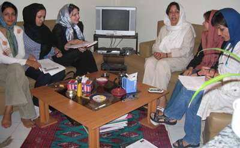
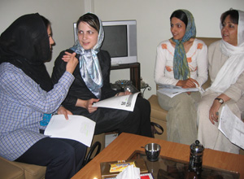

|
|

تحلیل و بررسی آنچه از کوچه و خیابان های شهر می آید: کوچه به کوچه
تنظیم: سمیه فرید
دو شنبه30 مهر 1386
قرارمان را همچون بسیاری ازبرنامه های کمپین در خانه هایمان گذاشتیم هرچند این روزها سعی بر این است که خانه هایمان را نیز ناامن کنند. هر کدام مان از کوچه پس کوچه های گوناگون به خانه ای در مرکز شهر می رسیم و دق الباب می کنیم تا از کوچه به کوچه بگوییم. بنفشه حجازی نویسنده مدعو کوچه به کوچه درست به موقع می رسد و گردانندگان میزگرد را که نویسندگان بخش کوچه به کوچه نیز هستند و هنوز نرسیده اند خجالت می دهد. البته منصوره شجاعی مدعو دیگر میزگرد با تاخیرش کمی آنها را از خجالت در می آورد! سمیه از گردانندگان میزگرد با موجی از فریاد به خانه وارد می شود و تند تند شروع می کند به توضیح دادن:« تازه رسیده بودم میدان. داشتم از خیابان رد می شدم که صدای فریاد های زنی همه جا را پر کرد. وقتی سرم را برگرداندم دیدم زنی خودش را با شدت به شیشه خودروهای گشت پلیس می کوبد تا دخترش را از دست گشت ارشاد نجات بدهد. حالم خیلی بد شد... » در میان سکوت پس از این موج، صدایی آرام ما را به حال بر می گرداند: «سلام. من بنفشه حجازی هستم، آب براتون بیارم؟! ...» و خنده است برلب های جمع که تصویر خشونت ارشادی را محو می کند.
نسیما شریعت، هدی امینیان از نویسندگان کوچه به کوچه هم می آیند. نسیم سرابندی هم که نیامده است بعدا به سوالها پاسخ مکتوب می دهد، دو نویسنده دیگر کوچه به کوچه هم نتوانسته اند بیایند. میزبان پروین اردلان است. نفیسه آزاد هم به عنوان میهمان در جلسه حضور دارد. بعدتر زارا امجدیان مهمان بعدی هم می رسد. او فردای آن روز عازم کرمانشاه است تا در برنامه سالگرد کمپین در این شهر شرکت کند.
میزگرد تمام می شود اما هنوز یک چیز کم دارد. حاضران این میزگرد زنانه روسری هایشان را سر می کنند و برخی هم مانتوهایشان را به تن. به جای رفتن دوباره می نشینند! گرمی صحبت محو می شود، ژست ها شکل می گیرد. به ظاهر گرم صحبت می شوند هرچند خنده شان می گیرد از وارونه نمایی! سرانجام عکس هایی هم می ماند به یادگاری از این لبخندها !
نتیجه این میزگرد دو ساعته نوشته ایست که در زیر آمده است.

کوچه به کوچه : اختصاص بخشی به نام کوچه به کوچه در سایت تغییر برای برابری تجربه نویی برای ثبت تجربیات زنانه است. تجربه ای که از دل یک حرکت اجتماعی درآمده و فرد به فرد و شاید نسل به نسل بازگو و ثبت خواهد شد. طی بیش از یک سالی که از راه اندازی این بخش می گذرد، افراد و به ویژه زنان حتی آنان که تجربه ای در نوشتن نداشتند در این بخش نوشته اند و به نوشتن ادامه داده اند و کارگاه های نوشتن نیز برای علاقه مندان برگزار شده است با وجود این حرف و حدیث درباره کوچه به کوچه زیاد است مثلا برخی در انتقاد به این بخش گفته اند که مطالب به لحاظ ساختار ادبی ضعیف است. شما این بخش را چگونه ارزیابی می کنید؟
نسیم سرابندی: فکر می کنم امکان دارد این بخش از لحاظ ساختار ادبی ضعیف باشد، چون امری طبیعی است. وقتی اشخاصی که هیچ گاه ننوشته اند و یا برای نویسندگی آموزش ندیده اند، مطلبی می نویسند مطمئنا کارشان کیفیت بالایی ندارد. اما این مسئله قابل حل است. می توان به کسانی که می نویسند آموزش داد که چگونه بهتر بنویسند.
بنفشه حجازی : كي ميگويد مطالب ضعيف است؟ چرا ضعيف است و اصولاً چرا بايد ادبي باشد؟ چه اهميتي دارد؟ براي من مهم نيست كه واو به واو مطالب کوچه به کوچه را بخوانم و به آن نمره انشا بدهم. من به عنوان شخصی که از بیرون نگاه می کند و تجربه جمع آوری امضا ندارد، وقتي سايت را باز ميكنم نميخواهم وقتم تلف شود، سليقهام هم بالاست اما نميخواهم يک متن ادبي بخوانم بلکه نوشته های بچه ها از این نظر برایم جالب است كه می توانم تجربههاي آنها را دنبال کنم، می توانم مشكلات سطح شهر را ببینم، اینکه بدانم در حوزه عمومي چه مشكلاتي براي يك ديالوگ فرهنگي تحقيقاتي وجود دارد. هر كدام از مطالب بچهها براي من چيزي از خيابان ميآورد، از تفكر مردم که من با اين كه نويسنده برونگرايي هستم در جريانش نيستم و این برایم بسيار آموزنده است. به عنوان يك خواننده شناخت خيابان چيزي است كه من از كوچه به كوچه ميخواهم.
من كاملاً به اين بخش به صورت يك سياست اجرايي نگاه ميكنم. ضمن این که فکر می کنم گزارشنويسي به صورت وظيفه براي همه سخت است. چون فرد حس ميكند كارش تكراري است، وقتی از ديگران تأييد نميگيرد، فكر ميكند چیز خوبی ننوشته است. وقتی دچار كمالگرايي افراطي می شویم ميخواهيم از همه نمره 20 بگيريم. خب، نتیجه این می شود که بچهها كم كم دچار ركود ميشوند و در نهایت ايست ميكنند چون فکر می کنند نمی توانندكارشان را به سمت یک كار ادبي ببرند. بچهها نبايد انرژي شان را روي اين موضوع بگذارند.اين كار بايد يك لوگوي ژورناليستي داشته باشد. حالا ميتواند زيبايش كند، احساس خودش و طرف مقابلش را دخيل كند. ولی بايد كاملاً قاطع و ژورناليستي گزارش بدهد. این گزارش ميتواند يك پاراگراف باشد و يك تصوير يا عكس. دوستان بايد بدانند چه می خواهند باشند، باید بدانند ميخواهند چگونه كار كنند. نگاه به جهان و پيدا كردن لوگوي كار برای ادامه مهم است.
منصوره شجاعی: ابتدا من به يك جمله ماركز اشاره می کنم كه ميگويد روزنامهنگاري مكتوب يك فرم ادبي است. يعني روزنامهنگار بايد ادبيات را هم بشناسد. كوچه به كوچه وقتي شروع شد الزاماً با نگاه ادبياتي شروع نشد. در واقع اخبار كوچه را ميآورد. انتقال تجربه، تشويق كردن، ارتباط ايجاد كردن، اطلاعرساني كردن كار آن بود كه موفق بود اما اتفاقي كه دارد ميافتد يك جور توليد ادبي است.
بنفشه درباره مخاطب، هدف و فرم صحبت ميكند كه خيلي هم مهم است و نظر او این است که فرم را با توجه به ماهيت و مخاطب انتخاب كنيم. فرمي كه خواهان آن هستيم چيست؟ کوچه به کوچه چه بوده، چه شده، چه كرده است؟ من از سه منظر به آن نگاه می کنم: انتقادات وارده، كارگاه نويسندگي، ايجاد زمينه براي استعدادهای جوان ، انتقال تجربه در جمع آوری امضا .
اگر بخواهيم نمودار كوچه به كوچه را بكشيم تصویری شکل عدد هفت ميبينيم. در شروع، برخی از بچههايي كه قبلاً سابقه نوشتن داشتند يكسري از تجربیاتشان را مکتوب کردند. اما كار در کمپین بزرگ است و انحصاري نيست. تمام كساني كه امضا جمع می کنند اين زمينه برايشان ايجاد ميشود كه بيايند و تجربههايشان را بنويسند و منتقل كنند. يك جور كارگاه نوشتن. البته باید پذیرفت که هر دموكراسياي مقداري آنارشي هم با خود همراه دارد. چه در فضاي مجازي و چه در فضاي واقعي. اين را كاملاً در كوچه به كوچه ميبينیم. گاهي مطالب به يك ملودرام تبديل ميشود ولي نقطه اوج هم دارد، تراژدي هم دارد. اوقاتی از شدت زبان مردمي داشتن ممكن است به هزل هم نزول كند اما گاهي يك طنز خوب هم در آن ديده ميشود. اينجا دارد انتقال تجربه اتفاق ميافتد. عمومي شدن و اطلاعرساني كردن و آموزش دارد اتفاق ميافتد. در واقع این بخش به يك كارگاه نویسندگي هم تبدیل شده است. وقتي نوشين احمدی خراسانی انتشار مجموعه مقالات جنس دوم را شروع كرد مطالب كساني كه تجربه نوشتن نداشتند در کنار كساني که تجربه نوشتن داشتند منتشر شد. در كنار هم قرار گرفتن نوشته اين آدمها باعث شد آن كسي كه تا حالا ننوشته بود خودش را بالا بكشد و آن كسي كه هميشه فكر ميكرد بايد مطالبش در نشریات خاصي منتشر شود بیاید خودش را در كنار دیگران قرار دهد. حالا این اتفاق دارد در کوچه به کوچه می افتد و با تکیه به آن تجربه میتوان گفت که مطالب کوچه به کوچه توان بهتر شدن و حتی تبدیل شدن به یک فرم ادبی را دارد.
بنفشه حجازی: درواقع هدف اصلي ما جمعآوري يك ميليون امضاست. جمعآوري امضا كجا اتفاق ميافتد؟ بيرون از حوزه خصوصي، حوزه عمومي، حوزه حتي حكومتي. خب، ما ميخواهيم اين بچهها وقتي برای جمع آوری امضا و آگاهی رسانی ميروند، اگر مسائلی برایشان پیش آمد، آنها را بیان کنند تا بقيه هم ياد بگيرند و دچار آن مشكلات نشوند. بهتر است اين مسائل در نوشته ها منعکس شود حتي اگر چندان ادبي هم نباشد. مطالب كوچه به كوچه 1- براي تشویق به گرفتن امضا در فضای عمومی، 2- براي گريز از خطر، 3- براي دادن مختصات از جامعه ايرانی که ميتواند مورد استفاده جامعهشناسان هم قرار گيرد.
ما واقعاً از نظر ايجاد ارتباط با افراد ضعيف هستيم و اين گزارش ها ميتواند در اين زمینه به ما كمك كند. من خودم حتی يك امضا هم نگرفتهام! آنقدر که كار سختي است! بارها در مهماني ها خواسته ام راجع به اين موضوع صحبت كنم و امضا بگيرم اما دیدم واقعاً كار سختي است این تجربه ها به من نحوه ارتباط گرفتن با مردم را یاد می دهد.
حال وقتي بخواهيم این تجربهها را در قالب كلمات بریزیم، توانايي ها و نگاه به اطراف متفاوت است. اگر کسی بتواند این توانایی را به دست بیاورد که مطلبش را به سطح ادبی برساند و نویسنده قدري هم بشود و در عین حال آگاهی رسانی و جمع آوری امضا را هم ادامه دهد که بسیار ایده آل است اما ما بايد به افراد انگيزه بدهيم كه هر کس با هر مدلي كه مينويسد بنويسد و اتفاقات را شرح دهد. من فقط نگرانم كه بچه ها از نوشتن بترسند.
منصوره شجاعی: البته من نگفتم كه کوچه به کوچه چطور بايد باشد بلكه در واقع روندی را كه طی کرده است توضيح دادم. در واقع خواستم آنرا با رویکرد ادبياتي بررسی کنیم. به نظر من بررسی مطالب كوچه به كوچه، می تواند از منظرهای گوناگونی مانند روند شكلگيري و تدوين، تأثيرگذاري، كارگاه نويسندگي، نقد فمينيستي، انتقال تجربه، ادبيات متعهد، ...باشد. موضوع جمعآوري امضا را در بخش تأثيرگذاري کوچه به کوچه می توان بررسی کرد.
کوچه به کوچه: به نظر شما کوچه به کوچه چه چیزهای دیگری را می بایست نشان می داد که تا کنون در انعکاس آن کم توان یا ناتوان بوده است ؟
بنفشه حجازی: من تقريباً نديدم كه بچهها چطور از خانه بيرون می آیند. چه وضعيتي دارند؟ ما مرتب از حوزه عمومي حرف زديم ولی نگفتيم كه اين آدم که برای امضا جمع کردن از خانه بیرون رفته، شب چطور به خانه برميگردد و ...
منصوره شجاعی : موضوع ديگر این است كه همه از موفقيتهايشان مينويسند ولی به نظر من بايد براي تنوع و جلوگيري از يكنواختي از شكستها هم بنويسيم. بنابراین فکر می کنم همان طور که قبلا هم گفتم توجه به 5 نکته در کوچه به کوچه لازم است:1. نگاه به کوچه به کوچه به عنوان یک كارگاه نويسندگي براي ارتقا زبان و فرم ، 2. ادبیات متعهد و آرمانگرايي در نوشتار، 3. نقل تجارب موفق و ناموفق، 4. مخاطب شناسي، 5. و به قول بنفشه ، تحليل وضعيت خانگي يعني اتفاقاتی که برای اینکه فرد از خانه خارج شود براي او ميافتد و اتفاقي كه وقتي به خانه برميگردد منتظر اوست. یعنی نگاهی به خانه برای حضور در کوچه !
بعد ميتوان مطالب را تماتیک کرد یعنی این موضوعات را دسته بندی کرد و در این صورت هر کس می تواند موضوع و تمی را که دوست دارد بخواند. مثلا برای خود من یکی از نکات جالب در این نوشته ها مقایسه است. مثلا "مقایسه من و مادرم. در نگاه به کوچه های امضا خیز "! اکثر مادرهاي شما هم نسلهاي من هستند که دهه شصت و مسائل ناشی از آن را تجربه كردهاند حالا نگاه آنها به این حرکت بیرونی و حتی از نوع مدنی چیست. به نظرمن اين مقابلهها به ایجاد تنوع كمك ميكند. وزمینه های متنوعی برای بیان آنچه که در کوچه و جمع آوری امضا اتفاق می افتد را فراهم می کند . و دیگر اینکه از شكست نوشتن بسيار مهم است یعنی علاوه بر تنوع در مطالب، يك جور حركت جسورانه هم هست. گمان میکنم در طی این یک سال فقط یک مورد داشتیم که از شکست نوشته بود.
همچنین تجربه های متفاوت افراد روی نوشته های آن ها تاثیر می گذارد . مثلا بچههايي كه دستگير ميشوند بعد از زندان يكدفعه نوع نوشتنشان تغییر ميكند. تجربه بودن در فضاهای متفاوت كار آنها را متنوع می کند. به نظر من هر تنوع كوچكي باعث جذب مخاطب می شود.
بنفشه حجازی: خوب است هر كس يكي از نكتههاي ايمني مربوط به برخورد با شرايط غيرعادي را در مطالب كوچه به كوچه بگنجاند. این موضوع گونه خاصی از نوشتار را می طلبد که می تواند با یک و دو وسه شروع شود و شکل بگیرد، مثل هر توصیه ایمنی دیگر . اما راضی کردن و همراه کردن خانواده ها و گرفتن یاری از آنان، زبان و بیان و سبک کار دیگری می طلبد که هم برای خواننده ها آموزنده باشد و هم خانواده هایی که مطلب را می خوانند همراه کند تا دیگر نیاز چندانی به سرو کله زدن با آنان نباشد. یعنی موضوع ،سبک خود را می طلبد و برای موفق بودن ارائه نمی توان از تحمیل همراهی سبک و موضوع گریخت.
منصوره شجاعی: سيمين بهبهانی ميگويد: "ادبيات و به ويژه شعر سلاح حفظ انسان مبارز و ادبیات مبارزاتی است" ایشان در توضیح بیان خود می گویند كه با كلام ادبي، قصه، داستان و شعر ميتوانيم سختترين مسائل را بگوييم اما چون قالب، شعر و داستان و ادبيات است آن تيزي مقالههاي مقالهنويسان را ندارد. كوچه به كوچه هم ميتواند اين كار را بكند. آن تيزي را درقالبهاي داستان و خاطره بریزد و بگويد.
کوچه به کوچه: صحبت هایی که شد بیشتر از منظر بیرونی بود. این بخش از منظر درونی به ویژه از نگاه نویسندگان و دست اندرکاران کوچه به کوچه چگونه دیده می شود ...
سميه فرید: ورود من به كمپين مقاله نوشين احمدی خراسانی در كوچه به كوچه بود. وقتي هم برای اولين بار ميخواستم براي امضا جمع كردن بروم از مطالب كوچه به كوچه ايده گرفتم و اول يك سري از مطالب كوچه به كوچه را خواندم. فکر می کنم تجربههای دیگران، عكسالعمل ما را در شرايط خاص آسانتر ميكند. ابتدا وقتی می نوشتم یا می خواندم آگاهي از شرایط خیابان براي من خيلي مهم بود ولي وقتي در كوچه به كوچه مينویسم سعي ميكنم هر بار نوشتنم را هم بهتر كنم در واقع هم گزارش بدهم و هم بهتر بنويسم. علاوه بر اینكه اين مطالب شرايط خيابان را نشان دهد يا براي امنيت بچههايي كه امضا جمع ميكنند خوب است کافی نیست و اينکه فردی که داریم با او حرف می زنیم و می خواهیم از او امضا بگیریم کیست؟ چه شکلی است؟ سرگذشتش چیست و ... هم موضوع بسیار مهمی است. به نظر من از تجربه های متفاوت زنان نوشتن هم قسمتي از هدف كوچه به كوچه است.
هدي امینیان: به اعتقاد من، مطالب کوچه به کوچه تاحدودی يك شكل شده است و جذابيت سابق را ندارد. مثلاً قبلا فکر می کردم وقتی کسی مطالب این بخش را می خواند هربار یک نوع تجربه جدید، برخورد جدید می بیند و اطلاعات جدید به دست ميآورد ولی الان خودم دیگر خيلي از نوشته ها را نميخوانم. به نظر من باید در شیوه کار کوچه به كوچه تغیراتی ایجاد شود. نميدانم چگونه می توان در آن تنوع ایجاد کرد. آیا باید در سبك گفتاري یا نوشتاری بخش تغییری حاصل شود؟
نسيما شریعت: تنها بخشي را كه قبل از پيوستن به كمپين به نويسندهاش اهميت بيشتري ميدادم كوچه به كوچه بود. با اين كه بخشهاي ديگر خيلي تخصصيتر بودند ولي كوچه به كوچه چون به نظرم نوعی خاطره نویسی بود ترجيح ميدادم مطلب كسي را بخوانم كه اسمش را شنيده باشم. بعد هم كه به من پیشنهاد شد در بخش کوچه به کوچه همکاری کنم احساس کردم كه لابد کارم ضعيف بوده که براي اين بخش دعوت شده ام. فكر ميكردم كوچه به كوچه ضعيف است و براي يك تازه وارد جای خوبي است. ولي بعد كه با مطالب برخورد كردم ديدم سبك نوشتاري نویسنده ها خيلي متفاوت است و حتی کار در این بخش کمی سخت تر است. با وجود این، احساس می کنم خود بچه ها هم نوشتن مطلب در کوچه به کوچه را تا حدودی سطحي ميگيرند و اهميت نميدهند. مثلاً يك مطلب ضعیف به كوچه به كوچه ميدهند ولي بعد يك مقاله خوب از آنها در بخش های دیگر چاپ ميشود.
منصوره شجاعی: خب، براي اينكه افراد در هر زمينه ای که مهارت دارند کار بهتری ارائه می دهند. ما نميتوانيم قالب بسازيم و آدمها را در قالب بگذاريم. بايد اجازه دهيم كه آدمها در قالبهاي خودشان كار كنند. و در همان قالب اثر تاثیر بخش و ماندگاری از خود به جا بگذارند. كوچه به كوچه هم در نوع خود قالببردار نيست و هرکسی با سلیقه خودش در آن می نویسد. اما اگر هدف كوچه به كوچه آن چيزي است كه بنفشه ميگويد يعني خاطرات كوچه، يه جور ادبيات كوچه و خيابان یا به عبارتی ادبيات مبارزاتي كوچه و خيابان ما، در این صورت هر متنی را نمی توان در این بخش گنجاند، منتها هر كس می تواند با سبك خودش در این فضا بنویسد. هدفش هم مشخص است. منظورم این است که آدمها را در قالب همديگر نگنجانيم. منتها متوجه باشیم که اين آنارشي ايجاد شده موجب تنزل و پايين آمدن سطح مطالب و توقع آدمها نشود.
این را هم اضافه کنم که به نظر من اين نوشتهها به لحاظ هویتی در ژانر ادبيات متعهد جا ميگيرد. ادبيات متعهد هم تعاريف و چارچوبهاي خودش را دارد. در کوچه به کوچه می بینیم که این همه آدم رفته اند، در كوچه پس كوچهها سرك كشيده اند، از مردم امضا گرفته اند و خاطراتشان را ثبت كرده اند. من ديدم كه بچهها این رفت و آمدها را گاه بصورت نمايشنامه، گاه تابلو تابلو و گاه اپيزودي كار كردهاند. اينها خوب است ولي نباید هدف اصلی، انتقال تجربه، گم شود. اینکه ببينيد در كوچه پس كوچهها چه اتفاقاتي ميافتد. درست است كه هدف يك ميليون امضا است اما هدف ارتباط و آگاهي هم هست. مثلاً نگاه من به كوچه به كوچه واقعاً انتقال تجربه کار برای کمیپن است در قالب خاطرات و با تکیه بر ادبیات.. اين تجربه به تعداد آدمها می تواند متفاوت باشد و در عین حال يكنواخت نباشد. براي اين كه هر كسي از ظن خودش وارد كمپين می شود و ثبت اینها خودش ادبيات خلق ميكند. يعني حركت نو است و پدیده های نویی دارد خلق ميشود و این اتفاق در كوچه به كوچه هم دارد می افتد.
مثلا برای بنفشه هدف این حركت، جمع آوری يك ميليون امضا است. براي من ارتباط و آگاهی است. همین جا الان دو تنوع نگاه وجود دارد. شخص دیگری ممکن است بر آموزش تأكيد کند. منتها باید سعي شود نه حالا الزاماً يك اثر ادبي ولي يك كار خوب ارائه شود چون كوچه به كوچه قرار نيست داستان پردازی خيالي باشد. کوچه به کوچه می تواند نوعی تحليل ادبی آرمانگرايانه از یک تجربه باشد، یعنی حفظ نگاه آرمان گرایانه در کار.
بنفشه حجازی: اين صحبتهايي كه شما ميكنيد براي پرانگيزه كردن حركت از واجبات است. ما ميخواهيم يك ميليون امضا بگيريم، تجربههايش را بنويسيم و همچنان اين آتش را زنده نگه داريم. به نظر من يكي از راههاي زنده نگهداشتن آن هم این است كه آنقدر نوشته های كوچه به كوچه را جذاب كنيم تا هم در كساني كه امضا جمع ميكنند انگيزه ايجاد شود و هم كساني كه حركت زنان را چه با نگاه مثبت و چه منفي از طريق كوچه به كوچه زير نظر دارند، ببينند كه چيز دیگري هم دارد اينجا اتفاق ميافتد.
کوچه به کوچه : خب در کوچه به کوچه می گوییم باید انتقال تجربه صورت گيرد. بعد هدي ميگويد كه مطالب براي من تكراري شده. به نظر می آید اين تكراري شدن در تجربه نيست، در نوشتن است. حالا بحثي كه مطرح است این که چطور ميشود كوچه به كوچه همچنان پويایياش را حفظ كند و همچنان انتقال تجربه صورت گيرد؟ آیا اين عنصر خلاقيت است که در كوچه به كوچه ميتواند كار را ارتقا بدهد. یا تنوع سبك و افراد و نوشتار و فرم است؟ یا قدرت ارتباط ؟ ما بیرون می رویم که هم اگاهی رسانی کنیم و هم جمع اوری امضا، همانطور كه بنفشه می گوید ميخواهيم برويم در خياباني كه تا حالا نبوده ايم. ميخواهيم خودمان را خيابان تصوير كنيم و در عين حال خيابان را و مردم را در نوشتهمان. چه كنيم تا اين تنوع فضايي و موضوعي را گسترش دهيم؟
بنفشه حجازی: به نظرمن، افرادي كه امضا جمع ميكنند تقريباً هم طبقه هستند و به همین دلیل نگاه هایشان به جهان بیرونی مشابه است. تشويق كردن افراد متفاوت با فرهنگهای مختلف به کار کردن و نوشتن می تواند یكي از كارهاي شما باشد. از شیوههاي تقويت كردن نگاه، ريزبيني و درست نگاه كردن به اطراف است که همه اینها باید در نوشته ها منعکس شود. مثلا خوب است که برای بخش کوچه به كوچه جايزه بدهيم و چرایی آن را با انتخاب نوشته ها توضیح بدهیم. یعنی درباره ویژگی های نوشته های منتخب و تاثیرات آنها بحث کنیم.
نسیم سرابندی: این مسئله به خلاقیت ادبی هر فرد برمی گردد که در اثر ممارست در تمرین حاصل می شود و هم اگر در نوشته ها تنوع شکل بگیرد و یکی از روی دست دیگری ننویسد مطمئنا مطالب از دید مخاطب جذاب تر می شوند. این تنوع می تواند در سبک و فرم باشد. یکی فقط روایت می کند اما امکان دارد دیگری از دیالوگ بسیار استفاده کند. مثلا دو نفر امکان دارد در خیابان حضور داشته باشند اما یکی از آنها در روایتی که می کند بیشتر به برخورد آدم ها بپردازد و یکی دیگر به طور کلی برخوردها را در کنار فضای اطرافش ترسیم کند. اما موضوع این است که نویسنده باید به نوشتن عادت کند. در عین حال مطالب متنوع را هم بخواند و تنوع را درک کند بعد می تواند هم موضوعات و هم فضاهای مختلفی را ترسیم کند.
سمیه فرید: یک سال از کوچه به کوچه گذشته و بعضی تجربیات برای ما تکراری شده که برای کسی که اولین بار است آن را تجربه می کند هنوز نو است. من که مطالب قبلی را می خواندم می دیدم در ابتدا همین تجربه های ساده چقدر برای همه ما جذاب بوده و چقدر بچه ها پایین مطالب نظر می داده اند. الان آن شور اولی که در نوشته ها بوده نیست.
بنفشه حجازی: شايد خوب است كه بچههايي كه با هم همسويي فكري و انديشهاي داريد بنشينيد و با هم يك مطلب بنويسيد.
هدي امینیان: من هم فكر ميكنم كاربرديترين راه براي هركدام از ما اين است كه دور هم جمع بشويم و بنويسيم. در آن كارگاه نوشتنی که با پروین اردلان کار کردیم همه با هم در یک زمان کوتاه نوشتیم . من هم نوشتم و کارم هم خیلی خوب از کار درآمد. بعد از اینکه مطلبم روي سايت منتشر شد، نظرات بچهها دلگرمي و اعتماد به نفسي به من داد كه فكر ميکردم همه كار ميتوانم بكنم. به نظر من باید بيايیم کارگاه با تعداد محدود برگزار کنیم كه افراد شرکت کننده با هم به نوشتن ادامه بدهند و اين كه اين حرفها را در آن كارگاهها هم بگويند.

کوچه به کوچه : برخی معتقدند که ترویج الگوهای نوشتن به ویژه توسط فعالانی که صاحب سبک یا مسلط برنوشتن هستند می تواند در ارتقای کیفی کار اعضایی که کمتر می نویسند تاثیرداشته باشد نظر شما چیست؟
نسيما شریعت: در این صورت ممکن است بچهها بترسند كه متهم به تقلید کردن بشوند.
بنفشه حجازی: خب، اين كه اصلاً اتهام نيست.
سمیه فرید: خب، چه اشكالي دارد؟ ما از کار همدیگر الهام ميگيریم. مثلا در کار یکی فضا وجود دارد، بو وجود دارد، حس وجود دارد. کارهایی را ميبينيم که حس دارد و اصلاً با کاری که از آن الهام گرفته فرق دارد اما هر دو حس شان نوشته اند. من می توانم حس نوشته یا فرم نوشته را به کار خودم منتقل می کنم. بنابراين آيا به اين اصلاً ميگوييم تقليد كردن؟
منصوره شجاعی: در ادبيات اصلي به نام توارد داريم. يعني شباهت اسطورههاي سرزمینها و اقوام مختلف . مثلاً پاشنه آشيل يونان چشم اسفنديار ماست. هیچ کس نمیتواند مدعی شود که ایرانیان ویا یونانیان متهم به تقلید کردن از یکدیگر شده باشند. به هرحال هر تولیدی یا کشف شخصی است ویا با مشاهده الگو های مشابه ایجاد می شود مهم این است که ما به تقلید به عنوان اهرم شروع کار نگاه کنیم. بنابر اين به نسیمای عزیزم می گویم که این اتهام نيست. تأثيرپذيري است و بسيارهم مفيد است.
نسیم سرابندی: به نظر من هم اثر مطلوب دارد. اگر هیچ اثری نداشت که کسی به کلاس نویسندگی نمی رفت و سبک های مختلف نوشتن را نمی آموخت. فردی که سالهاست به امر نوشتن می پردازد فکری بسیار خلاق و پیچیده دارد و هر گاه که می خواهد مطلبی را شروع کند تک تک جملات را سبک و سنگین می کند بنابراین حتی می تواند الگوهای جدید نیز به وجود بیاورد و به دیگران هم منتقل کند.
کوچه به کوچه – برگزاری کارگاه های آموزشی همان طورکه هدا گفت چه دستاوردهایی خواهدداشت؟
هدی امینیان: مهمترین دستاورد آن تواناتر کردن زنان در حوزه نوشتن است. ممکن است که بسیاری از زنان تجارب بسیار خوبی داشته باشند که به درد دیگران هم می خورد ولی به دلیل عدم توانایی در نوشتن و یا نداشتن اعتماد به نفس لازم برای نوشتن از اینکار صرفنظر می کند. به همین دلیل من فکر می کنم در یک کارگاه آموزشی برای نوشتن می شود این حس اعتماد به نفس را به وجود آورد و زنان را در این حوزه تواناتر کرد.
نسیم سرابندی: این کار مخاطب بخش کوچه به کوچه را بیشتر جذب می کند. افراد گذشته از اینکه نگاه کردن به یک اتفاق از ابعاد گوناگون را می آموزند، تجربیات خود را به دیگری هم انتقال می دهند. جو پویایی که در کارگاه ایجاد می شود باعث شکل گیری رقابتی برای بهتر نوشتن می شود و برای نویسنده ها پیش زمینه هایی از آنچه که دیگران می اندیشند ایجاد می کند.
منصوره شجاعی: قطعا در ارتقای سطح نوشتاری کوچه به کوچه موثر خواهد بود زحماتی که دوستان در برگزاری این کارگاه ها می کشند در واقع بخش ادبیات مستند کمپین را روز به روز قوی تر خواهد کرد و تاریخ جنبش زنان را می سازد.
بنفشه حجازی: اما من فکر می کنم برگزاری یک کارگاه آموزشی جامع الاطراف و کوتاه مدت دردی را دوا نمی کند. نمی توان نسخه آماده ای دست افراد داد و همه چیز درست شود؛ فرصت لازم است تا خون شیر شود. برنامه ریزی می خواهد. آشنایی با سبکهای ادبی ، آشنایی با دستور زبان ، گسترش واژگان ، آشنایی با اغلاط جاری و همه گیر . تا برسیم به آشنایی با عناصر داستانی و سایر مواد و مصالح کار ادبی و...
سمیه فرید: چیزی که به نظر من کارگاه های نوشتن به داوطلبان ارائه می دهد، درست و جامع دیدن است. من از خودم مثال می زنم. من هر بار که با دوستانی که خوب می نویسند در این باره صحبت می کنم، همین صحبت کردن، در نوشته بعدی من تاثیر می گذارد. چون می فهمم چیزهایی بوده که من موقع نوشتن فکر نمی کرده ام مهم است اما بوده. حتی برای انتخاب کلمات دقت بیشتری می کنم. گاهی بچه ها هم مطلبی می فرستند و من به عنوان خواننده حس می کنم در مورد بعضی چیزها باید می نوشته اند که ننوشته اند. وقتی با آنها صحبت می کنم می بینم بیشتر لزوم نوشتن آنها را حس نکرده بودند و متنی که دوباره می فرستند بسیار کامل تر می شود.
کوچه به کوچه: به نظر می آید که عمومیت داشتن مسائل زنان و عمومی کردن این مسائل تا حدی در این بخش منعکس شده است. مثلا ما در آثار نویسنده های کوچه به کوچه روایت در روایت می بینیم، يعني از زندگی و سرگذشت من نوعی كه درحال امضا جمع کردن هستم وارد زندگی زنان دیگر شده و بدین ترتیب تجربیات مشترک زنان را در زمینه تبعیضات قانونی و اجتماعی در این انتقال تجربه می بینیم و به عینه در می یابیم که شخصی- سیاسی است و جمع آوری امضا روشی است برای بیان عمومی این مسائل. شما چه فکر می کنید؟
نسیم سرابندی: من کاملا موافقم. در این گونه نوشته ها نویسنده نه تنها به بیان خود و نظرات خودش می پردازد بلکه زندگی دیگران و تجربه هایشان را برای دیگران نقل می کند و شاید مسائلی را که از طرف بیشتر این آدمها هیچگاه گفته نشده عمومی می کند و به سطح جامعه می آورد .
سمیه فرید: حرفی که پروین اردلان همیشه می گوید و من خیلی دوستش دارم این است که ما ( کسانی که امضا جمع می کنند و تجربیاتشان می نویسند) شهرزاد های قصه گوی زندگی های تو در توی هم هستیم. به نظر من روایت کردن اتفاقات و گفتن از زندگی و تجربه های زنان و خودمان می تواند در عمومی کردن مسائل زنان موثر باشد. گاهی حس می کنم در نوشته های ما بیشتر از اینکه از زنانی بگوییم که با آنها هم صحبت شده ایم، از شیوه های خودمان در امضا گرفتن حرف می زنیم، اینکه ما چه گفتیم تا آنها امضا کنند! به نظر من همیشه امضا جمع کردن اتفاق مهم نیست بلکه نوشتن از زنانی که با ما حرف می زنند و گاهی امضا می کنند و گاهی هم نمی کنند مسئله مهم است.
من گاهی در مورد نوشتن بعضی تجربیاتم احساس وظیفه می کنم. یعنی حس می کنم الان من وظیفه دارم مسائل زنانی را که با من حرف می زنند بنویسم تا مردم بدانند درخانه زن ایرانی دارد چه اتفاقی می افتد و فکر می کنم تا وقتی این مسائل عمومی نشود، در خانه های همه ما تکرار می شود و هیچ راه حلی برای آن نمی توان پیدا کرد.
منصوره شجاعی : قطعا در عمومی کردن این مسائل نقش داشته. برای مثال سمیه می گوید که انگیزه ورودش به کمپین با خواندن مقاله نوشین ایجاد شده . یعنی تجربیاتی که نوشین در کوچه به کوچه می نویسد عمومی کردن شخصی ترین حالاتی است که در هنگام یک عمل اجتماعی بر او حادث شده بنابراین دیگر نه ترس و دلهره اش شخصی است و نه جسارت و شجاعتش. از تعهد اجتماعی اش هم سرباز نزده این همانی است که به قول معروف از دل برآمده و حالا بردل سمیه جوان ما نشسته تا که درآینده بر دل سمیه های دیگر هم بنشیند.
کوچه به کوچه : آیا از کوچه به کوچه نمی تواند این تحلیل هم بیرون بیاید که این بخش می تواند نمایش تیپ های متنوع مردمی باشد؟ یا به عبارت دیگر کوچه به کوچه چقدر می تواند در کاهش مطلق نگاری های ما موثر باشد؟ چون در برخی نوشته مثلا می خوانیم که با دیدن فلان شخص با فلان هیبت یا پوشش فلان فکر را کردم اما بعد نظرم عوض شد. منظور این است که آیا کوچه به کوچه در شکستن مطلق نگاری های ما نقش داشته است؟
سمیه فرید: گاهی ما اینقدر در کلیشه های ذهنی خود اسیر می شویم که از روبرو شدن با واقعیت فرار می کنیم. این مسئله ایست که در امضا جمع کردن های ما خیلی دیده می شود. مثلا من برای صحبت کردن با مذهبی ها همیشه تردید دارم. یا ترجیح می دهم با هم نسلان خودم هم کلام شوم. فکر می کنم نوشتن از تجربیاتی که به کلیشه های ذهن ما ضربه می زند و واقعیت را از زاویه دیگری نشان می دهد به ما کمک می کند که در حرکتی مثل کمپین که معتقدیم برای همه ایرانیان در سراسر جهان است گروه هایی از مردم را حذف نکنیم و یاد بگیریم علی رغم تفاوت هایمان با همه در مورد برابری حرف شویم. من یادم می آید که مطلبی در کوچه به کوچه خواندم که نویسنده در مورد قوانین با یکی از مسئولان حراست دانشگاه حرف زده بود و اتفاقا با نظر مثبت او روبرو شده بود. این مطلب روی من به عنوان کسی که می رود و امضا جمع می کند اثر زیادی داشت.
منصوره شجاعی: يكي از چيزهايي كه بچهها ميتوانند در كوچه به كوچه مطرح كنند اين است كه كدام قشر بیشتر امضا كرده و كدام قشر رد كرده. اين ديگر فقط نقل تجربه نيست و تحليل هم است. مثلاً از تجربیات كوچه به كوچه ممکنه این نتیجه به دست بیاید كه پزشكها آدمهاي بيتفاوتي بودهاند. یا کارمندان با دلهره پیش آمده اند یا زنان خانه دار شجاع بود ه اند و اين خودش تحليل و بررسی می شود . و از طرف دیگر به قول شما کلیشه های شکل گرفته در ذهن هم تغییر میکند مثلا اگر تا به حال فکر می کردیم که فلان تیپ امکان ندارد به این مسائل توجه کند حالا نگاهمان طور دیگری است ببینید این یک تجربه عملی ناب است برای تیپ شناسی ، شخصیت شناسی و نقد کلیشه های سنتی .
هدی امینیان: به نظر من هم خواندن تجارب دیگران نه تنها می تواند نوع نگاه آدمها(نویسنده) را نسبت به اجتماع و مردم آن نشان دهد بلکه می تواند قضاوت های ما را در مورد دیگران عوض کند و همینطور که گفتید مطلق نگاریها را از بین ببرد.
نسیم سرابندی: به نظر من هم نقش موثری داشته. ذهن آدمی الگوهای قالبی دارد و آشناییت هایی از آدم ها و مکان هایی که می بیند دارد و از آنجایی که رفتار انسان ها متغیر است، امکان دارد شما در مکانی به فردی برخورید که فکر می کردید او حتما امضا می کند اما او این کار را نمی کند اما فردی که تصور می کردید امکان ندارد به حرف شما حتی گوش دهد، امضا می کند. این آشنایی زدایی اتفاق جالبی است که از مطلق فکر کردن ما را نجات می دهد
بنفشه حجازی: گاهی مطالبی در این بخش می خوانیم که نظر ما را در مورد تیپ های مختلف تغییر می دهد؛ اين مطلب اگر واقعی باشد، پيش داوريهاي ما را اصلاح ميكند. اما اگر صادق نباشیم به تاريخ دروغ گفتهايم. به طور کلی فکر می کنم اين كوچه به كوچه برد خيلي وسيعي دارد. ماده خام مناسبی براي شناخت جامعه ايران است.
آشنایی با جامعه که از طریق این جامعه گردی حاصل می شود . همان تهیه مواد خام است که دستمایه بررسیهای جدی تر جامعه شناسانه می تواند باشد ولی آشنایی مقطعی با یک عده یا روش یا طرز فکر نباید مارا به نتیجه گیری عجولانه رهنمون شود که مثلا به اکتشاف یک طرز تلقی رسیده ایم . بررسی و نتیجه گیری باید مبتنی بر طرح تحقیقاتی باشد. بهتراست این کار را به اهلش بسپاریم وبه کار خودمان بپردازیم و آن اطلاع رسانی ، آگاهی دادن به جامعه ، ثبت لحظات این تبادل و انتشار آن به طریقه درست ادبی و...
کوچه به کوچه: کوچه به کوچه چقدر در توانمند کردن زنان نقش داشته است؟ برخی معتقدند که کوچه به کوچه قدرت بيان زنان را بالا برده و به آنها اعتماد به نفس داده است. آیا به نظر شما چنین است؟ مثلاً بعضي از بچهها اولين نوشته خود را در كوچه به كوچه نوشتهاند و نوشتن را ادامه داده اند و حتي خيليها الان مقالهنويس هم شدهاند.
نسیم سرابندی: اگر فردی به امر نویسندگی علاقه داشته باشد مطمئنا نوشته های کوتاه که در آن ذهنش را خالی می کند، گام اول برای نوشتن است. پس نوشتن از این تجربیات و خالی کردن ذهن شلوغ می تواند گشایشی برای ادامه دادن راه نوشتن و نویسنده شدن باشد.
بنفشه حجازی: احتمالاً قبلاً هم مينوشتند ولي حالا جرأت كردند.
سمیه فرید: نه خيليها دفعه اولشان بوده.
بنفشه حجازی: عاليه. راستی الان چیزی به نظرم رسید و آن این است که ممکن است امضا گیرندگان و گزارش نویسان به تمام عکس العملها و موارد قابل اتفاق در حیطه کار خود دست یافته اند لذا موضوع جدیدی اتفاق نمی افتد که نوشته جدیدی خلق شود . یعنی کوچه و خیایانهای ایران جز رنگارنگی در سطح واکنش اش از این موارد ذکر شده فراتر نمی رود. لذا نباید چندان نگران تکراری بودن شد.
سميه فرید: براي خود من نوشتن خيلي سخت بود و هيچ وقت نمينوشتم. اما كوچه به كوچه آنقدر ملموس بود و اتفاقاتي را كه افتاده بود راحت ميتوانستم بنويسم که نوشتم شايد چون احساس خودم بود. البته متن ادبی ای نبود اما همين كه احساسی در من بود که می توانستم روی کاغذ بیاورم به من اعتماد به نفس می داد
بنفشه حجازی: اين به نظر من خودش يك مطلب است. كليه كساني كه مينويسند بگويند كه چطور شد كه شروع كردند براي كوچه به كوچه بنويسند.
نسيما شریعت: كتاب بینامتنی را كه يك زماني من ميخواندم، در آن كتاب ميخوانيم كه زنان دچار اضطراب تالیف هسنند. يعني ميترسند. چرا چون ما تا اواخر قرن 18 هيچ نويسنده زني نداشتيم. تأييدش هم اين كه زنان با اسمي مردانه مينوشتند تا آثارشان چاپ شود. كوچه به كوچه دارد اين اضطراب تعريف را ميگيرد. يعني دارد اين مشكل را حل ميكند. نظريه ديگري وجود دارد که نویسندههاي مرد پدر دارند. يعني از اول تعداد زیادی نويسنده مرد بوده كه بقیه هم طبق روشي كه آن ها داشته اند مينويسند ولي نويسندههاي زن هيچ مدلي ندارند. يعني هيچ كس قبل از آن ها ننوشته. از قرن 19 كه نوشتن زنان شروع شده اين اضطراب تعريف هميشه با نويسندههاي زن بوده چرا که این حس در آنها وجود داشته که نسبت به نويسنده مرد عقب هستند. مادری چون پدر مردان نويسنده ندارند. در این بخش چون بچهها ميتوانند هر اتفاقي كه برايشان ميافتد واضح و راحت بنويسند و هيچ مشكلي هم پيش نميآيد این حسنی را که اشاره کردم دارد اما گاهی مطالب مشكلاتي از لحاظ فرم دارند و نوشتار ادبيشان مشكل دارد كه بايد اديت شود.
نکته ای که می خواهم اضافه کنم این است که چيزي كه كوچه به كوچه به من داد اين بود كه قبل از خواندن اين مطالب جرأت بيان عقايدم را جلوي بعضي افراد نداشتم اما بعد از خواندن مطالب كوچه به كوچه اين شجاعت را پيدا كردم ر فتم برگه بيانيه را به آنها دادم و از آنها خواستم كه امضا كنند و حتی توانستم نیم ساعت در این مورد با آنها صحبت کنم.
اگر بخواهیم این نوع نوشتارها را به رغم تنوع نوشتاری و به رغم اهداف آرمان گرایانه شان تعریف کنیم آیا می توانیم از آنها به عنوان نوعی نوشتار زنانه نام ببریم؟
منصوره شجاعی: تصور میکنم اگر از نگاه نقد فمينيستي به كوچه به كوچه نگاه کنیم، نوشتاری زنانه می بینیم. حتی اول کار می بینیم در كوچه به كوچه فقط زنان و دختران می نویسند. از يك جايي به بعد اين نوشته زنانه بین پسران می رود. یعنی الان ما ميبينيم كه پسران هم دارند اینگونه مينويسند. اينها خيلي مهم است که آن ها از درونيترين احساسشان ميگويند. گاه حتی درد دل می کنند و این واقعا تاثیر هویت نوشته های زنانه بر همه کسانی است که در این بخش می نویسند.
تصور می کنم " بکر ی تمیزی " است که می گوید: نوشته زنانه بین صدتا نوشته معلوم است چون جوهر قلم زنان سفيد است. زنان با شير خود مينويسند. الان وقتي نوشته پسران را هم كه ميخواني احساس می کنی جوهر قلم آنها هم سفيد شده است. اين تأثير يعني گسترش طیف نوشتار زنانه. بنفشه معتقد است كه ما انتظار نداريم كه يك اثر ادبي ببينيم پس بگذاریم در همان حد معمول بماند. نقد ادبي نميكنم اما من ميگويم اتفاقاً بگذاريد اين اتفاق بيفتد. اين همان چيزي كه ماركز ميگويد. يعني روزنامهنگاري مكتوب يك فرم ادبي است. حالا بياييم اين فرم ادبي را در قالب فمينيستي نگاه كنيم. این نوشته ها چقدر تجربههاي شخصي را منتقل كرده؟ چقدر به عمومی کردن حرکت کمک کرده؟ چقدر راه براي بقيه باز كرده؟ چقدر به پروسهاي كه اين نوشته به واسطه آن خلق شده نگاه كرده؟
كوچه به كوچه ماهيتاً تجربه است. خاطره است. ميخواهيم از اين خاطره استفاده برای انتقال تجربه بكنيم استفاده امنيتي بكنيم ولي قصه است. خاطرهنويسي است. ژانر ادبي است. چون اينگونه است مجبوريم آن را به ژانر ادبي نزديك كنيم. به فرمهاي ادبي نزديك كنيم كه سطح آن بالا برود و جذاب بشود و بعد نوشتار زنانه را معرفي كند كه پسران به نظر من خيلي دارند خوب جلو ميروند. يعني در واقع در اثر تأثير و نوع نوشتن صمیمانه زنانه این اتفاق افتاده است. پس در واقع این تاثیر دارد اتفاق می افتد.
بنفشه حجازی: بد نیست که حواسمان باشد وقتی از زنانه و مردانه نویسی حرف می زنیم هنوز از یک چیز مشخص و معیار شده نمی توانیم حرف بزنیم. کارهای زیادی باید انجام گیرد تا ما بتوانم تفاوت دید و نحوه نگارش زنان و مردان همطراز را قانونمند کنیم تازه آن وقت هم چون در حیطه هنر حرف می زنیم قانون و قاعده ای شکننده خواهد بود .نوشتن از مسائل زنان و یا ابراز علاقه مردان به نوشتن از مسائل زنان به معنی زنانه نویسی نیست . اگر این طور باشد می توان از مردانی یاد کرد که به زیباترین وجه توانسته اند مسائل زنان را بیان کنند. شاید در کارگاه گزارش نویسی بد نباشد روی ویژگیهای زبانی ، موضوعی ، توصیفی،انتخاب واژگان حتی طول جمله ها . نحو جمله ها و خیلی چیزهای دیگر نویسندگان کوچه به کوچه دقت کرد و به برداشتی رسید که البته بدون داشتن یک پروپوزال درست صرفا یک ماجراجویی ادبی خواهد بود. چرا که در بررسی اولین تجارب ادبی تعدادی نویسنده در آغاز که سالها تحت تاثیر اقتدار فضای ادبی مردانه بوده اندو از اول دبستان تا حال با اقتدار متن دست به گریبان نتوان جز به زبانی مردانه و آن هم الکن دست یافت. . باید با حفظ هوشیاری نسبت به جوانب محتلف این حرکت ذوقزده نشد و با مسائل سنگینی از این دست علمی تر برخورد کرد.
نسیم سرابندی: نوشتار زنانه مشخصاتی دارد که بعضی ار مطالب کوچه به کوچه به صورت کم یا زیاد این ویژگی ها را دارا هستند. فردی که آگاهی جنسیتی دارد و به کلیشه شکنی جنسیتی می پردازد، از دردهای خود به شکل ادبی می نویسد و از روش های گوناگون، جدید و زنانه برای نوشتن سود می جوید تا حدی می توان گفت به نوشتار زنانه نزدیک شده است اما این زنانه نویسی هم نیاز به تمرین دارد و بی مقدمه شکل نمی گیرد. در بعضی از مطالب قوی کوچه به کوچه این مشخصات یافت می شود.
یکی دیگر از نقش هایی که برای کوچه به کوچه برشمرده اند بحث مستند کردن همزمان تجربیات زنان بوده است. بعد از پدیده وبلاگ نویسی که عاملی بود برای مستند کردن خاطره ها و تجربیات به طور همزمان و انعکاس عمومی آن، به نظر می آید کوچه به کوچه همین روند را البته در روند یک حرکت اجتماعی دنبال می کند. به نظر شما تاثیر این نوع تجربه نویسی در روند یک حرکت اجتماعی چون کمپین چیست؟
منصوره شجاعی: هر حرکت اجتماعی بدون خلق ادبیات خاص آن به سختی میتواند ماندگار شود و در تاریخ مستند جهان جای بگیرد. تجربه مادران و مادربزرگ های ما از دوران مشروطه تا کنون به لحاظ تسلط تاریخ مرد نگاشت به سختی به ما رسیده وو اقعا به سختی از دل تاریخ شفاهی زنان و یا زحمات یکی دو مورخ متاخر به مامنتقل شده و درس هایی به ما آموخته.. تاریخ مشروطه کسروی یکی از معتبر ترین نسخه های تاریخ است انصافا بروید و نگاه کنید ببینید جقدر در مورد زنان نوشته ویا این کتاب ها و منابع تاریخی زنان که اخیرا تدوین شده جقدر از این کتاب به عنوان یک منبع معتبر توانسته استفاده کند ؟ خب حالا امکانی فراهم شده که زنان باقلم خود تاریخ خودرا مکتوب کنند و نوشتار زنانه در تاریخ نگاری باب شود آیا این مبارک نیست ؟
بنفشه حجازی : ثبت این گزارشها به هر صورت چه ادبی چه با ضعف تالیف نشانگر این است که این جنبش زنده است و قلبش می تپد و ندای من این جا هستم را به گوش امروز و فردا و همیشه تاریخ خواهد خواند. جدی است بسیار جدی.
هدی امینیان: به نظر من این نوع تجربه نویسی یک تفاوت اساسی با وبلاگ نویسی دارد و آن چرخش نوشته ها یا تجربه ها حول یک محور مشخص است که همان کمپین می باشد و چون کمپین یک حرکت اجتماعی است و در بطن جامعه در جریان است تجارب بر آمده از این حرکت نیز به نوعی بازگو کننده جامعه ، جریانات و تفکرات حاکم بر آن است که می تواند یک بینش جامع از جامعه به ما بدهد و با استفاده از همین تجارب کسب شده از کوچه و خیابان می توان هشیاری و آگاهی نسبت به حرکت اجتماعی و بازخورد آن در جامعه و نوع نگاه مردم و چگونگی برقراری ارتباط با آنها را بدست آورد که این می تواند عامل مهمی در پیشبرد حرکت های اجتماعی باشد.
نسیم سرابندی: برای کسانی که در این حرکت شریک هستند بسیار موثر است در عین حال باعث ثبت لحظه ها در تاریخ برای قضاوت آیندگان خواهد شد.
سمیه فرید: به نظر من این هم نوعی خلاقیت زنانه است. ما تاریخ را از گذشته به حال آورده ایم و هر روز با آن سرو کار داریم. می توانیم در حال آن را نقد کنیم و حرکتمان را بهتر به پیش ببریم. اینطوری شاید کمتر لازم باشد در آینده برای اشتباهات گذشته امان حسرت بخوریم.
بنفشه حجازی : ثبت این گزارشها به هر صورت چه ادبی چه با ضعف تالیف نشانگر این است که این جنبش زنده است و قلبش می تپد و ندای من این جا هستم را به گوش امروز و فردا و همیشه تاریخ خواهد خواند. جدی است بسیار جدی.
هدی امینیان: به نظر من این نوع تجربه نویسی یک تفاوت اساسی با وبلاگ نویسی دارد و آن چرخش نوشته ها یا تجربه ها حول یک محور مشخص است که همان کمپین می باشد و چون کمپین یک حرکت اجتماعی است و در بطن جامعه در جریان است تجارب بر آمده از این حرکت نیز به نوعی بازگو کننده جامعه ، جریانات و تفکرات حاکم بر آن است که می تواند یک بینش جامع از جامعه به ما بدهد و با استفاده از همین تجارب کسب شده از کوچه و خیابان می توان هشیاری و آگاهی نسبت به حرکت اجتماعی و بازخورد آن در جامعه و نوع نگاه مردم و چگونگی برقراری ارتباط با آنها را بدست آورد که این می تواند عامل مهمی در پیشبرد حرکت های اجتماعی باشد.
نسیم سرابندی: برای کسانی که در این حرکت شریک هستند بسیار موثر است در عین حال باعث ثبت لحظه ها در تاریخ برای قضاوت آیندگان خواهد شد.
سمیه فرید: به نظر من این هم نوعی خلاقیت زنانه است. ما تاریخ را از گذشته به حال آورده ایم و هر روز با آن سرو کار داریم. می توانیم در حال آن را نقد کنیم و حرکتمان را بهتر به پیش ببریم. اینطوری شاید کمتر لازم باشد در آینده برای اشتباهات گذشته امان حسرت بخوریم.
بنفشه حجازی : ثبت این گزارشها به هر صورت چه ادبی چه با ضعف تالیف نشانگر این است که این جنبش زنده است و قلبش می تپد و ندای من این جا هستم را به گوش امروز و فردا و همیشه تاریخ خواهد خواند. جدی است بسیار جدی.
هدی امینیان: به نظر من این نوع تجربه نویسی یک تفاوت اساسی با وبلاگ نویسی دارد و آن چرخش نوشته ها یا تجربه ها حول یک محور مشخص است که همان کمپین می باشد و چون کمپین یک حرکت اجتماعی است و در بطن جامعه در جریان است تجارب بر آمده از این حرکت نیز به نوعی بازگو کننده جامعه ، جریانات و تفکرات حاکم بر آن است که می تواند یک بینش جامع از جامعه به ما بدهد و با استفاده از همین تجارب کسب شده از کوچه و خیابان می توان هشیاری و آگاهی نسبت به حرکت اجتماعی و بازخورد آن در جامعه و نوع نگاه مردم و چگونگی برقراری ارتباط با آنها را بدست آورد که این می تواند عامل مهمی در پیشبرد حرکت های اجتماعی باشد.
نسیم سرابندی: برای کسانی که در این حرکت شریک هستند بسیار موثر است در عین حال باعث ثبت لحظه ها در تاریخ برای قضاوت آیندگان خواهد شد.
سمیه فرید: به نظر من این هم نوعی خلاقیت زنانه است. ما تاریخ را از گذشته به حال آورده ایم و هر روز با آن سرو کار داریم. می توانیم در حال آن را نقد کنیم و حرکتمان را بهتر به پیش ببریم. اینطوری شاید کمتر لازم باشد در آینده برای اشتباهات گذشته امان حسرت بخوریم.